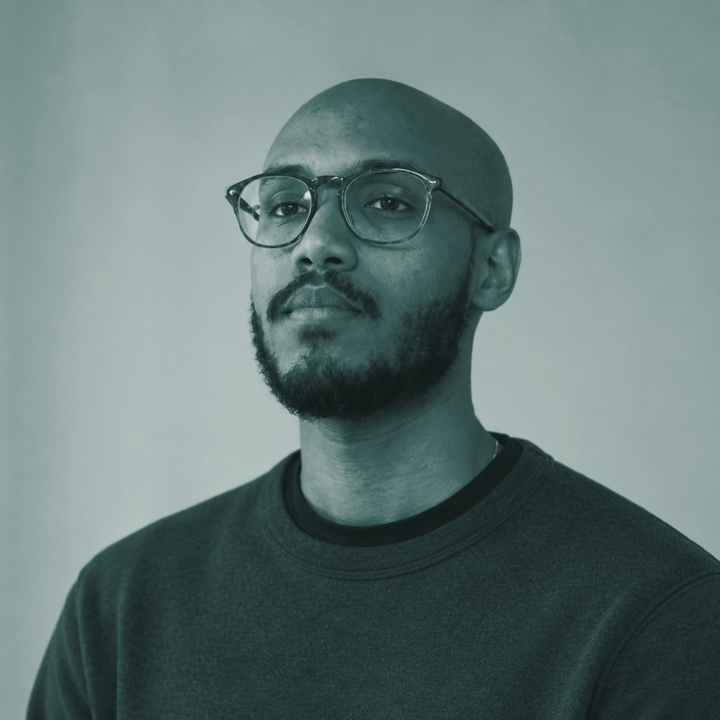

mire@it-support:~/about$
About

My interest in technology didn't start in a classroom. I've been the person family and friends call when a computer won't boot, a printer won't connect, or Windows needs reinstalling, going back to when I was a kid. There was never a single moment I decided to get into IT. It's just always been the thing I was already doing, long before it was a career plan.
At Haaga-Helia I've studied networks, operating systems, and security in a structured way, which filled in a lot of the "why" behind things I'd already learned to do by trial and error. Alongside my studies, I've built a hands-on lab portfolio (Windows Server, Active Directory, DNS/DHCP, file permissions), each one backed up with screenshots and a real troubleshooting case. I wanted proof I could point to, not just a list of course names.
Five years in customer service taught me what IT support takes, and it's less technical than people expect: listen first, solve second. A frustrated user doesn't want a lecture on DNS, they want to get back to work. That means asking the right questions before jumping to a fix, explaining what's happening in plain language, and staying calm when someone else isn't. Those habits carry over directly: the technical side is something I can keep building, but the patience and the listening are already there.
To me, IT support is mostly about restoring order to someone's day as fast as possible, and being honest about what's going on when you can't fix it instantly. In my lab work, I deliberately broke things: a wrong DNS setting, a locked account, a missing group membership, so I'd know what each failure looks like before I see it on a real ticket. That's the habit I want to bring to a service desk: don't guess, check the simplest explanation first, fix the real problem, and confirm it's fixed before closing the ticket.
Right now I'm looking for a first role in helpdesk or service desk work, somewhere I can put these habits to use on real tickets and keep learning from people who've been doing this longer than I have. Longer term, I want this to grow into a proper career in IT: support is where I want to start, not where I plan to stop.